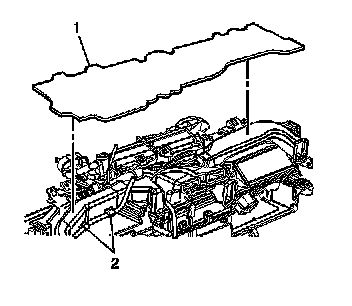
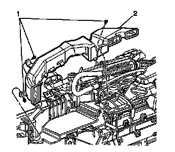

Instrument Panel Outer Air Outlet Upper Duct Replacement - Left Side (Left Hand Drive)
Instrument Panel Outer Air Outlet Upper Duct Replacement - Left Side (Left Hand Drive)
Removal Procedure
1. Remove the instrument panel (I/P) retainer. Refer to Instrument Panel Retainer Replacement (Left Hand Drive) (Service and Repair)Instrument Panel Retainer Replacement (Right Hand Drive) (Service and Repair) .

2. Remove the dash insulator (1).
3. Disconnect the wiring harness from the air duct.

4. Remove the screws (1) that retain the air duct.
5. Remove the left air duct (2), by unsnapping the duct from the HVAC module.
Installation Procedure
1. Install the left air duct (2), by pressing down until you hear the tabs engage on the HVAC module.
Notice: Refer to Fastener Notice .
2. Install the air outlet duct screws (1).
Tighten the screws to 2 N.m (18 lb in).
3. Connect the wiring harness to the air duct.
4. Install the dash insulator (1).
5. Install the I/P retainer. Refer to Instrument Panel Retainer Replacement (Left Hand Drive) (Service and Repair)Instrument Panel Retainer Replacement (Right Hand Drive) (Service and Repair) .